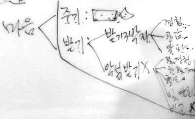
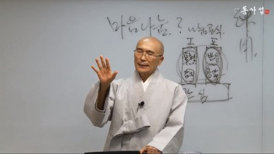

同事攝아카데미
一般課程
第13,14 講 和合
무엇을 강조하는 것은 그것이 잘 되지 않기 때문입니다. 和合을 강조할 때는 和合이 잘 되지 않으니까 和合을 강조할 것 아닙니까. 공기에 대해서는 시비하지 않습니다. 공기는 절로절로 좋으니까. 그런데 탄산가스가 꽉 차있다면 공기가 거론될 거예요.
和合이라. 여러分 和合이라 하면 무엇이 떠오릅니까? 나는 和合을 강조하면 문득 슬퍼지는 듯한 그런 마음이 들어요. 왜냐? 본래 하나인데 쪼개졌으니까 和合이란 말이 나오는 게 아니겠습니까? 본래 하나잖아요. 생각하면 할수록 하나거든요. 빅뱅이전에 하나였잖아요. 또 그 하나가 서로 이렇게 폭발을 해서 열렸다 해도 전체가 서로 어우러져서 중중하게 關係를 맺으면서 흘러가는 하나의 네트워크이고 하나의 인드라망입니다. 그런데 쪼개졌다고 생각하고 쪼개져서 서로 편을 가르고 싸웁니다. 아프니까 아프지 말아야 될 것 아니냐, 우리가 和合을 해야 할 것 아니냐 하고 강조하는 상황입니다.
和合을 강조한다, 修心을 강조한다 하지요? 修心강조도 어찌 보면 슬픈 이야기입니다. 左右之間 이 世上을 볼 때 和合 이 필요합니다. 和合이 어째서 나의 主題가 되었는가 하는 것은 이렇습니다. 스님이 되고 보니까 佛法僧三寶에 귀의 하는 것이 기초 개념이었습니다. 佛法僧의 승은 스님입니다. 그런데 어느 순간에 승 개념을 보니까 化合衆이에요. 和合하는 무리라야 승이라는 겁니다. 승이 되려면 和合하는 무리라야 되는데 僧인 스님들이 化合衆이 아니라 和合을 잘 못해요. 뭔가 에너지가 서로 어긋납니다. 和合하는 무리라야 승인데 그것이 아니구나, 해서 和合이 테마가 되었어요. 和合 이 테마가 되어서 정말 우리 僧團이 和合된 世上 이 되게 하려면 어찌해야 될 것인가. 이렇게 설문을 하게 됐습니다. 모든 스님들이 化合衆이 돼야 하겠는데 어떻게 해야 그렇게 될 것인가. 모든 사람들이 和合을 해야 하는데 어떻게 해야 될 것인가. 그런데 재미있는 것은 和合 에 관심은 두고 世上을 보면 和合이 보이는 게 아니라 매일 불화가 보여요. 和合을 중시 여기면서 世上 사람들을 보면 和合하는 世上이 더 보이는 것이 아니라 매일 불화의 場이 더 많이 보입니다.
그리고 10 년 걸렸습니다. 和合의 개념이 이러하면 되겠구나 하고 原理次元으로 딱 잡혀서 셋으로 整理가 될 때까지 10년 걸렸습니다. 우선 和合 이라고 하는 것을 정의해 보면 두 사람 사이에 서로에 對한 우호감이 적정선으로 되는 것이 和合 입니다. 서로 사이에 우호감이 흘러야 和合입니다 그래서 和合의程度 는 우호감의 總計다, 總和다, 이렇게 보면 됩니다.
여러분, 인간관계를 가만히 보세요. 부부간이라고 하면 남편에 對한 나의 우호감이 얼마나 되는가. 나는 남편에 對한 우호감이 얼마나 되는가. 우호감을 100으로 놓고 두 사람의 합이 200이 만점이라고 한다면 여러分들은 내외간에서는, 혹은 부자지간에서는, 인간관계에서는 우호감의 總和는 200 점 만점에 몇 점이나 됩니까?
그러면 그 和合은 왜 필요합니까? 왜 必要한가 물으면 여러分 들은 어떤 생각을 먼저 합니까? 나는 있고 없음의 차이를 먼저 생각해요. 和合이 없다고 하면 어때요? 나하고 너하고 和合이 없다, 和合이 부재하다, 和合수위가 낮다고 하면 그 자체가 고통입니다. 그리고 전쟁입니다. 和合이 있으면 어때요? 기쁨입니다. 대내的으로 보면 기쁨이고 대외 的으로 關係次元에서 보면 평화입니다. 和合 이 있고 없음은 기쁨과 평화의 있고 없음이 된다는 말입니다. 그래서 和合의 방법론이 必要 하지요.
和合의 방법론을 선명하게 잡는데 10년 걸렸다고 하면 좀 심하지요? 이것을 이야기할 때마다 늘 異狀 해요. 무얼 가지고 10 년이나 걸렸을까 합니다. 그런데 분명히 10 년 걸렸습니다. 물론 그것만 갖고 살았던 것은 아니지만 테마가 던져지고 나서 확연하게 答이 얻어진 건 10년 후였습니다. 10년 만에 얻어진 방법론이 무엇이냐 하면 ‘화3요’입니다.

화3요는 대단히 논리적입니다. 나하고 여기 앉아 계신 원님 사이에 和合이 된다고 한다면 내 속에서 원님에 對한 우호감이 높고 원님 속에 나에 對한 우호감이 높은 것이 두 사람 사이의 和合입니다. 그래서 내 立場에서 생각을 해봅니다. 내 속에서 원님에 對한 우호감, 상대에 對한 우호감이 높으려면 어찌해야 되겠냐 하는 겁니다. 答은 簡單해요. 얻어 놓고 보니 簡單했습니다. 보는 눈이 좋으면 내 속에 우호감이 높아져요. 눈입니다. 내가 저 사람에 대해서 우호감이 좋거나 좋지 않거나 하는 것은 무엇을 보고 그렇습니까? 저 사람 사는 모습을 보면서 점수를 낮게 주면 안 좋습니다. 그러니까 이 눈이 점수를 후하게 주는 눈이면 되는 겁니다. 그런데 점수를 후하게 줄 수밖에 없는 것이 저 사람의 존재를 보면 볼수록 신비 무궁해요. 점수는 높을 수밖에 없어요. 제대로 보면 볼수록. 그러니까 눈이 좋아야 합니다. 그래서 보는 눈을 責任진다. 이것을 原理하나로 잡았습니다. 이제 나는 내 앞의 모든 사람들을 바라보는 내 눈이 좋아지면 됩니다. 그러면 내 對象에 對한 우호감이 높아집니다. 이렇게 하면 실제는 우선 놔두고라도 原理的으로 OK가 됩니다.
두 번 째, 나는 우호감이 이렇게 높아져서 좋은데 상대방도 나에 對한 우호감이 높아져야 합니다. 나는 너에 대해 우호감이 높아져 노 프러블럼인데 너는 어떠냐? 네가 낮은 것은 어떻게 解決하느냐? 그러면 내가 너에게 떡도 사주고 뭣도 사주고 하면서 나에 對한 눈좀 고쳐다오, 고쳐다오, 이렇게 할 수도 없는 노릇이고 어떻게 해야 할까요? 그러다가 가만히 보니까 상대방 눈을 고치려고 할 필요도 없이 내가 여기에서 그 눈에 맞추어주면 되겠더라고요. 그래서 모습 問題가 나온 것입니다. 모습을 좋게 하면 되는 것입니다. 그러니까 이 두 개로 和合이 完成되는 거예요. 내 눈 좋아지니 상대방에 對한 우호감 OK. 내가 모습을 責任져버리니 상대방 속에 들어있는 나에 對한 우호감 OK 가 되는 겁니다.
이 두 개를 답으로 내려놓고 큰 밥값이라도 한 것처럼 만족스러웠습니다. 여러分들, 상상이 됩니까? 이 답을 사흘 만에 내렸다고 하면 별로였을 텐데 10년 만에 내린 답입니다. 이 2개를 마음속으로 暝想완료 해놓고, 야, 이거 노벨평화상감이다, 이랬다니까요. 노벨평화상을 어떻게 보고 이런 것을 가지고 노벨평화상감이라고 했는지는 몰라도 나로서는 노벨평화상감이었습니다. 그리고는 가만히 이 두 개를 잡고 며칠을 놀았어요. 눈을 責任지는 데는 자신있다는 感은 들었어요. 그런데 사람을 보면서 저 사람이 나를 어떻게 볼까 생각해 보았더니 모든 사람들 눈에 들도록 내 모습을 責任지려면 그것도 제법 복잡하겠더라고.
눈은 어느程度 된다고 하는데 내 모습에 대해서 자신이 점점 없어지는 거예요. 전라도 사투리를 싫어하는 사람이 있어요. 그런데 나는 전라도 사투리를 안 쓰고는 말을 못 하잖아요. 전라도 사투리를 고치기 爲해서 어떻게 해야 될 것인가. 이건 만만한 일이 아니라고요. 世上 사람들이 나한테 스님은, 禪師는 좀 날씬해야 돼, 하는데 나는 이렇게 임꺽정이처럼 생겼거든요. 다이어트만 하더라도 쉬운 일이 아니야. 또 얼굴이 좀 선비처럼 생겨야 하는데 나는 임꺽정이처럼 생겼어. 이것도 쉬운 것이 아니야. 아니, 보는 눈, 보이는 모습, 이것은 이론만 나왔을 뿐이지 實踐 에 가서는 영 안 되는 겁니다. 또 코고는 것이 징하게 싫은 사람이 있어요. 나는 이마를 붙였다 하면 코를 골기 始作하는데 그것도 問題야. 이래가지고 모습 지키기도 보통 일이 아니더라고. 또 나에겐 때 벗기는 습관이 있어요. 목 언저리에 손을 넣고 때를 벗긴다고요. 特히 아무개 스님 같은 사람은 이것을 질색합니다. 이것도 하지 말아야 한다 해서 안 한다고 결심했는데 돌아서서는 막 벗기고 있어요. 이런 式으로 몸에 익어져 있는 습관이나 타고난 것을 어떻게 지우느냐 막막해 집니다.
그러고 보니 눈을 責任진다 하는 것도 만만한 일이 아닙니다. 제대로 되기만 하면 좋은 原理지만 현실성이 정말 떨어지는 겁니다. 그러면 이 두 개를 어쩔 것이냐, 폐기처분 할 것이냐 하고 보니까 폐기처분 할 일 까지는 아닙니다. 이것을 분명히 志向 해 가야 합니다. 보는 눈, 보이는 모습 다 志向해 가야 됩니다. 그러나 이것을 和合론이라고 내놓기에는 딱 고양이 목에 방울달기 식이더라고요. 자, 우리 鼠族이 고양이로부터 자유로워지려면 고양이 목에 방울만 달아 버리면 된다. 그러니까 야, 좋다, 하면서 다 拍手를 쳤어. 마치 이 두 개 만 責任지면 된다고 하듯이 拍手를 쳤어. 그런데 누가 방울을 달고 올까? 하니까 내가 달겠습니다, 하는 쥐가 아무도 없었다는 거지요. 이처럼 현실성이 없는 겁니다. 그래서 그때까지 좋았던 노벨상감이 김이 쏙 빠지면서 이것을 폐기처분하기는 너무 아까우니까 폐기처분하지 않고 보존을 하되, 이것을 노력해서 어찌 해보자. 그런데 이것을 和合론으로 내놓기는 좀 그렇다, 했지요.
이래놓고 어째야 할 것인가 하다가 세 번 째로 交流가 나온 것입니다. 交流. 잘 交流한다. 잘 나눈다. 이 交流를 내놓고 보니까 역사的으로 이 交流문화는 쫘악 펼쳐져 있더라고요. 그리고 주변에 보니까 그저 무엇을 한다하면 서로 나누잖아요. 나눠서 解決합니다. 국제的으로 問題가 생겼다 하면 외교관들이 서로 만나서 나누잖아요. 그러니까 이 交流는 역사的으로 하나의 原理로, 평화의 原理 로, 關係의 原理로, 토착화되어 있는 겁니다. 그래서 이것을 끌어다 붙여놨어요. 보는 눈, 보이는 모습은 어렵더라도 이것으로 보충을 하면 좋겠다. 이것은 노력을 하면 한 만큼 좋겠다 했습니다.
보는 눈을 責任진다, 보이는 모습을 責任진다, 잘 交流한다. 이런 式으로 해놓고는 아 그래, 이나마 이程度로 해서 만족을 하자. 보는 눈, 보이는 모습 쪽에서 약간 기운이 빠졌지만 이것도 되면 좋으니까 志向해 가기로 하고 그나마 交流는 좀 쉽지 않느냐. 이래 놓고 내 自身을 보니까 交流인품 次元에서는 제로였습니다. 속에 한 마음이 있어도 表現을 못하고 3년간을 끙끙 거리면서 가지고 다녀요. 우리 스승님에 대해서 유감의 마음이 요렇게 하나 딱 있다 해도 “큰스님, 저 좀 예쁘게 봐 주세요”라고 한마디만 하면 될 것인데 그걸 못하고 음, 음 하고 있어요. 交流라고 하는 덕목으로는 내가 너무 안 되는 겁니다. 이 交流문화는 同事攝에서 개척 해온 것이고 同事攝의 엔카운터는 완전히 交流 이지 않습니까? 그렇게 交流문화를 엮어오고 개척을 해오면서 내가 일번 수혜자가 됐어요. 只今은 交流할 상황에 말을 못할 까닭이 없어요.
지금은 싸움도 할 수 있고 악을 쓸 수도 있어요. 옛날에는 악도 썼어요. 내 동생들한테는 악을 썼어요. 내 동생들, 안정권에서는 악을 썼는데 약간만 벗어나면 악도 못쓰고 음, 음 하는 거지요. 음, 음 해오던 그 역사가 여기 이 모습에 좀 보이지요? 只今은 많이 벗어났지만. 그래서 이 原理에 화3요라고 이름을 붙이게 됐습니다. 只今은 보는 눈을 責任진다 대신에 보는 눈을 바르게 한다고 좀 부드럽게 씁니다. 責任진다 하면 좀 그렇지요? 그래서 只今은 바르게 한다로 고쳤습니다. 보는 눈을 바르게 한다. 보이는 모습을 바르게 한다. 잘 交流한다. 이 세 가지를 화3요로 대서특필하고 和合론을 표출하지요. 자, 여기에서 눈을 바르게 하는 일은 修心에서 다루어지게 됩니다. 修心에서 自然히 눈이 다루어지게 되요. 여러分들 修心편을 가만히 한번 보세요. 눈이 다루어질 수밖에 없겠지요. 모습問題는 作善에서 다루어지게 되요. 和合에서는特히 交流를 가지고 진지하게, 상당히 밀도있게 工夫하게 됩니다. 交流. 나눔. 同事攝和合론이라 하게 되면 交流론입니다. 이 세 가지를 이론 的으로 화3요라고 쓰되, 눈은 修心에서 다루고 모습은 作善 에서 다루고 和合장에서는 交流를 다룹니다.
이제 交流에 대해서 생각해봅시다. 너하고 나 사이에 나눈다, 交流한다. 그래서 이 交流 는 나눔입니다. 나눔, 나누기예요. 나누기 어떻게 할 것인가. 마음 나누기 어떻게 할 것인가. 여기에서 하나씩 뜯어보면 마음 나누기 어떻게 할 것인가의 길이 확 열립니다. 나누기의 내용은 무엇이겠어요? 마음을 나눈다 하지 않아요? 마음이 내용물입니다. 그러면 이 마음이란 무엇이냐? 마음은 쉽게 이분법으로 생각하면 됩니다. 내 마음속에 무엇이 있어요? 어떤 마음들이 있어요? 내 마음속은 무슨 마음들이 있을까 하고 보십시오.
마음은 知情意입니다. 知情意하면 삼분법으로 나누게 됩니다. 그런데 意라고 하는 것은 知 영역입니다. 그래서 이 마음을 겉마음과 속마음으로 우선 나누어보자 하는 겁니다. 속마음과 겉마음. 그러면 상장을 받고 기뻤다, 하는 상황에서 상장을 받았음 이라는 내 마음속의 認知 過程이 하나 있습니다. 그런데 상장을 받으니까 기뻤음, 기쁨이라고 하는 마음 요소가 또 하나 臨在하게 됩니다. 상장을 받았다고 하는 認知 過程과 상장을 받음으로 해서 기쁨이라고 하는 마음이 일어납니다. 그러면 그것을 속마음, 겉마음으로 정의한다고 하면 상장을 받음 이것은 겉마음입니까? 아니면 속마음입니까? 이것은 겉마음이고 기쁨이 일어났어, 기쁨, 그것은 속마음입니다.
우선 마음을 이 두 가지로 생각하고 속마음과 겉마음 이 두 개를 내 속에서 한동안 익혀만 두면 人生살이가 아주 좋을 겁니다. 이것이 마음공부의 기초입니다. 마음공부의 기초가 무엇이냐. 속마음과 겉마음으로 나누어서 나를 바라보아라, 하는 것입니다. 이래놓고 바라볼 것 같으면 어떻습니까? 내 마음을 바라보면 유치원생 일기 쓰 듯이 됩니다. 어디 한 번 유치원생 일기 쓰 뜻이 떠올려 볼까요?
엄마가 나를 예쁘다고 하셔서 기뻤다.
이런 式으로 쓰게 됩니다. 그러니까 유치원생. 초등학생 1학년 일기 쓰 듯이만 열심히 하라 는 겁니다. 어른들이시여, 유치원생이 되소서. 이 유치원생이 천진하게 자기 마음을 들여다보고 자기 마음을 노래하는 이 노래를 어른들이시여, 왜 다 잊어 버리셨소? 하는 겁니다. 또 유치원생은 어때요?
아빠가 용돈 만원 주셔서 뛸 듯이 기뻤다.
이렇게 씁니다. 그러니까 아빠가 용돈을 줌, 여기까지는 겉마음이고 기뻤음, 이것은 속마음입니다. 엄마가 예쁘다고 한 것, 이것은 겉마음이고, 기뻤음, 이것은 속마음입니다. 이 두 가지 연습을 계속 하라는 것입니다. 이것이 마음공부의 기초가 되는 겁니다. 그리고 이것을 선명히 하게 되면 내 마음이 일단 이분법으로는 선명하게 보일 겁니다. 그리고 마음을 보아야 이분법밖에 없어요. 내 마음을 보려고 한다 해도 복잡한 것이 아닙니다. 이분법밖에 없습니다. 마음 나누기 어떻게 할 것인가? 내가 할 일은 이분법 마음만 열심히 읽고 토해내면 그것이 마음나누기의 한 축이 되는 것입니다. 그래서 同事攝에서는 ‘엄마가 예쁘다고 해서’까지를 촛대라고 하고 ‘기뻤다’를 불꽃이라고 해서 촛대 + 불꽃 형식의 문장을 수없이 쓰게 합니다.
그럼 마음 나누기는 어떻게 할 것인가? 내가 내 마음을 상대방에게 주는 것이 나누기의 하나입니다. 주기는 어떻게 한다고 했지요? 꾸지람 듣고 슬펐다고 表現하는 것이 주기입니다. 마음 나누기는 너와 나 사이의 關係에서 이루어지니까 내가 상대방에게 마음을 주었다면 어때요? 상대방은 내가 준 마음을 받아 주어야 합니다. 받기를 해야 됩니다. 받기는 어떻게 해야 할 것이냐. 상대방이 자기 마음을 나에게 주었습니다. 여차저차해서 기뻤다, 여차저차해서 답답했다, 하고 주었습니다. 그러면 나는 또 어찌해야 됩니까? 상대방 마음을 받아주어야 하지요. 그러면 내가 해야 될 일은 境遇에 따라서 주기도 하고 境遇에 따라서 받기도 하는 것이 마음나누기의 전부입니다. 복잡한 이론은 싸악 빼버리고 이 운동만 하는 겁니다.
무엇이나 表現할 때 이분법으로 表現하도록 가르쳐라 하는 것입니다. 가르친다는 것은 나부터 그렇게 하라는 것입니다. 그 다음에 받기를 어떻게 할 것인가도 工夫시켜 주어야지. 工夫시켜주려면 우선 무엇이 전제됩니까? 내가 그렇게 해야지요. 여러分들이 받기 할 때 同事攝에서는 몇 가지를 留念시킵니다. 싸악 빼버리고 받기 3박자만 留念하라. 그리고 옵션으로 악성받기에 떨어지지 말하라 하는 겁니다. 그러면 받기 3박자는 무엇입니까? 받기 3박자는 그대로 읽어주기(경청), 공감, 알파입니다. 경청하고 공감하고 적당한 알파를 덧붙이는 것이 받기의 전부입니다. 악성받기는 또 뭐라 그랬어요? 佛經청, 한풀이, 충고, 一般화, 비교 받기입니다. 이렇게 모두 이론으로 정립이 되어졌는데 이론으로 정립이 된 것을 머릿속으로 記憶하는 것은 지식 작업입니다. 그런데 지식 작업이 아니라 지혜 작업이 되어야 합니다. 지식에 “아하!”가 수식으로 붙어야 지혜가 되는 법입니다.

주기란 촛대불꽃으로 表現하는 겁니다, 주기란 촛대불꽃으로 表現하는 겁니다, 주기란 촛대불꽃으로 表現하는 겁니다. 이런 식 工夫는 지식 작업입니다. 그런데 똑같은 내용인데 지혜가 됩니다. “아! 맞다. ‘상장 받았어’에서 끝내지 않고 상장 받아서 일어난 느낌을, 그래서 ‘기뻤다’까지 表現할 것 같으면 내 속에 들어있는 따끈따끈한 감정까지 表現되니까 얼마나 시원한 表現이겠냐. 정말 表現할 때는 그래야 되겠어!” 이것이 지혜가 되는 겁니다. 그러니까 여러分들이 무엇인가를 익힐 때는 지식으로 익히지 말고, 그 지식이 “아하!”가 되도록 하라는 것입니다.
받기란 경청, 공감, 알파입니다. 상대방이 상장 받고 기뻤다고 하면 그것을 경청해서 당신 상장 받고 기뻤단 말이지요. 음, 그 마음 알겠네요. 음, 祝賀합니다. 이렇게 하면 되겠구나. 자 받기란 3박자로 하는데 경청次元에서 ‘그러셨다고요’, 공감 次元에서 ‘아이고 그러시겠습니다’, 알파次元에서 뭣하나 붙이고.... 이런 것이 지식입니다. 그러면 어떻게 하는 것이 지혜냐. “받기3박자, 경청이라. 그래, 정말로 경청이重要하겠다. 아하! 경청이 진짜重要하겠다. 왜냐? 상대방이 말을 했으니까 경청을 확실히 해야지. 여차저차해서 그러기로 했단 말이지요, 할 때 상대방이 와, 내 말이 傳達되었구나 하고 얼마나 시원할까. 경청이 되어야지.” 이것이 지혜고 덕입니다. 지식은 덕이 아니에요. 지혜가 덕입니다.
또 공감은? “그랬다면 당신 정말 슬펐겠네요. 아이고, 당신 그랬다면 너무너무 기뻤겠네요. 이때 얼마나 상대방이 통쾌하고 좋을까. 그런 공감을 해준 다는 것이. 거기다가 한 수 보태가지고 아이고, 안됐습니다. 제가 어떻게 도와드릴 것이 없을까요 한다든지. 아이고, 祝賀합니다 한다든지, 무엇인가 알파까지 붙인다고 한다면 상대방이 내가 온전히 자기를 받아주시는구나 하면서 흐믓해 할 것 아니냐. 그런 인간관계는 좋을 것 아니냐. 정말로 받기3박자 式으로 받아야 되겠구나.” 이것이 지혜입니다. 그것이 덕입니다.
악성받기도 마찬가지입니다. 악성받기는 佛經청이고 한풀기이고 충고이며 一般화이고 비교입니다. 이렇게 하지 마십시오, 하는 이것은 지식입니다. 아하!가 있어야 지혜입니다. “그래, 맞아 맞아. 우리는 대화할 때 상대방의 얘기를 겉으로는 듣는 척하면서 속으로는 자기 얘기할 것만 준비하고 있잖아. 佛經청을 하고 있잖아. 그렇다면 상대방이 얼마나 갑갑하겠어. 立場을 바꾸어봐. 내가 얘기하는데 상대방은 들어주지도 않고 겉으로는 들어주는 척하지만 속으로는 딴 궁리만 하고 있으면 얼마나 밉겠어. 와~ 정말 佛經청, 이거 안되겠네.” 이래야, 그거 정말 안 되겠다고 해야 그것이 지혜고 덕입니다.
“한풀이 받기도 마찬가지야. 상대방이 우리 시어머니 때문에 죽겠다고 했는데 한풀이 하는 사람은, 자네 시어머니가 그랬다고? 우리 시어머니는 어떤 줄 알아? 하면서 자기 시어머니 탓을 한참 하고 있다면 그 자리가 어떻게 되겠냐. 정말로 상대방이 여차저차 했으면 그것을 충분히 받아주고 나서 내 이야기 해야지. 받아주는 둥 마는 둥 해놓고 자기 얘기를 쫙 깔아 놓을 것 같으면 무대에 올라가 있는 사람 끌어 내려놓고 내가 무대에 올라 갈뿐이지. 정말 이거 안 되겠네. 또 충고 받기도 그렇지. 우리 시어머니 때문에 죽겠단 말이야 하니까 자네가 理解 하소, 그 따위로 충고한다고 해봐. 인간관계가 어떻게 되겠냐. 원수져요. 원수지려고 작정했다면 몰라도 무엇 할라고 충고를 뽁뽁 해대겠어. 아, 그 충고, 정말 할 일이 아니야.” 이런 것이 지혜입니다. 그리고 충고는 요청하더라도 하지 마십시오. 요청하더라도 충고 해줬다 하면 일단 들으면서 싸늘해집니다. 그래 놓고는 3년간을 씹어요. 누구는 충고해주는 것 몰라서 가만 있나? 하면서 말입니다.
그 다음에 一般화 받기를 봅시다. “아, 우리 아들 J대 들어갔단 말이야. 온 집안이 경사네.” 그러면 “아이고, 그러는가. 너무 좋겠네. 祝賀하네.” 이程度로 끝내면 좋을 것을 “아, 그런데 홍순이 딸도 J 대 들어갔고, 경숙이 아들도 J 대 들어갔다고 하데.” 이 따위로 一般화를 시켜버리면 내가 아주 원수 대접을 한 짓거리입니다. 정말로 一般화 表現은 할 일 이 아닙니다. 상대방이 크던 적던 경사 속에 있다면 충분히 함께 理解해주고, 공감해주고, 拍手쳐주고, 격려해주고 祝賀해주고 해서 깨끗이 그 사람을 띄워줘야지 거기다 대고 내가 찬물을 쫙 뿌리는 짓거리를 하면 안 됩니다. 거기에 대고 비교까지 하면 더 안 됩니다. “우리 아들 J 대 들어가서 우리 집안 경사 났는데” 하니까 “그랬는가, 祝賀하네”까지 해놓고는 그런데 말이야, 아무개 아들은 S 대 들어갔대, 요 따위 소리를 해버리면 안 됩니다. 이런 式으로 받기를 할 때 범할 수 있는 愚는 5대 악성받기라고 이야기를 하나 악성 받기가 어디 5대 뿐이겠습니까. 6대, 7대, 8대, 100대라도 됩니다.
섬세하게는 이 잘못된 받기 형식은 수없이 있을 수 있습나다. 그래서 깨어 있으면 됩니다. 깨어 있는다는 것이 무엇일까요. 받는 자리는 表現한 자를 기쁘게 해주는 자리라고 생각하는 것입니다. 그러면 기쁘게 해주는 자리니까 내가 거짓말로라도 기쁘게 해줘야 되겠다 하는 것은 어때요? 상대방을 기쁘게 한다는 것은 성공할지 모르나 내가 진실을 어겼다는 것은 잘못입니다. 무엇 하려고 하나를 올리기 爲해서 하나를 죽입니까? 윈윈(win-win)이 되어야지요. 상대방을 기쁘게 해주자고 하니까 기쁘게 할 작정으로 예쁘지도 않은데 예쁘다고 해대고, 별로 크게 拍手치고 싶지도 않은데 막 拍手를 쳐대고 하면 보기가 싫어요. 그러니까 내 속에서 일어난 정보, 내 속의 이 진실을 表現하면 상대방이 좋아하겠다 하는 것이 中道요, 正道입니다.
여기까지 알고 同事攝인들은 이것을 生活 속에서 실천하십시오. 그리고 가르치는 자리가 되면 境遇에 따라서 여기에 플러스 알파로 옵션을 조금 붙여도 좋습니다만 옵션을 안 붙이더라도 위의 것만 정확하게 傳達해서 世上 사람들이 주고받고 하는 것이 이 程度만 되게 한다 해도 훌륭할 것입니다.
보강을 조금 하겠습니다.
마음나누기를 어떻게 할 것인가 하는 主題가 던져지면 同事攝인이라고 하면은 일단 나눔 공식이 지식으로 떠오르고 그 지식이 지혜와 덕이 되게 해야 합니다. 마음 나눔이라는 것이 무엇이지요? 나하고 너 사이에 주기 받기 아닙니까. 그 주기 받기 하는 가장 이상 的인 상황이 어떤 상황일까 暝想을 해보면 몇 가지 개념이 딱 떠오릅니다. 나하고 너 사이에 주거니 받거니 하는 것이 벌어집니다. 나하고 너 사이에서 내가 해야 하는 것은 境遇에 따라서는 주기도 하고 境遇에 따라서는 받기도 합니다. 그런데 이때 우선 하나를 뺀다고 하면 주기를 뺄 수가 있습니다. 주기는 I (one)입니다. 내가 상대방에게 내 마음을 줄 때는 내 속에서 두 단계의 의식작업이 전개됩니다. 우선 내 속에서 내 마음을 내가 감지하는 의식 過程이 하나 있게 됩니다. 감지하는 過程 이 先行하는 것입니다. 이 감지되는 過程이 先行되지 않고 지껄여댔다 할 것 같으면 그 사람은 실속이 없는 얘기를 하게 되고 포커스가 자기마음에서 대단히 빗나간 대화를 하게 되요. 늘 그런 사람이 있습니다. 저 사람은 말은 하는데 마음이 들어 있지 않은 말만 해, 하는 境遇들이 있다는 말입니다. 그래서 그 말이 제대로의 말이려면 말에 마음이 담겨 있어야 된다는 것입니다. 그리고 마음이 담기려면 자기가 자기 마음을 감지해야 된다는 이야기입니다. 그래서 감지해서 表現하는 것이 I (one)입니다.
그 다음에 받기가 있어요. II (two)를 받기라고 합니다. 내가 받기 상황이 될 때 어떻게 해야 될까요? 상대방이 마음을 드러냈을 때 그 마음을 내가 받아야 합니다. 받기도 마찬가지로 내 마음에서 두 단계의 의식 작업이 되어야 합니다. 하나는 상대방에 對한 공감입니다. “이이고, 영하20도가 되는 날, 내가 밖에 나갔다왔는데 얼마나 춥든지 얼어 죽는 줄 알았다.” 이런 表現을 상대방이 했다면, 나는 받기를 해야 하는데 그때 추웠을 상황에 공감이 되어야 합니다. “아이고, 영하20도라면 굉장한 날인데 정말 추웠겠다. 추웠을 게 너무나 理解가 된다.” 하면 공감이 先行이 되고 그 공감한 것을 말로 드러내서 한 것입니다. 그래서 이 때의 表現은 반응이라고 합니다. 공감과 반응입니다.
그런데 주기 받기의 두 축에 전제되는 대단히重要한 요소 하나가 있어요. 그 요소가 무엇이냐 하면 두 축 밑에 붙어있는 토대입니다. 그것은 관심입니다. 그래서 관심의 지평위에 감지, 表現 하고 공감, 반응 한다고 합니다. 이것을 나눔공식이라고 합니다. 이 때 관심이 대단히重要합니다. 관심. 상대방에 對한 관심이 있고 없음의 차이는 엄청납니다. 내가 상대방에 대해서 깊은 관심을 가지고 表現을 한다고 해봅시다. “여보게, 내가 말이지 오늘 시장에 갔는데 어떤 사람을 만났는데 여차저차해서 이렇게 저렇게 해서 이런 사건이 있었단 말이지. 그 때 내 마음은 참말로 복잡했어.” 이런 式으로 관심을 가지고 表現을 할 때는 表現하는 속에 깊은 에너지가 싸악 실려서 表現됩니다. 받기 할 때도 마찬가지로 상대방에 대해서 관심을 가지고 공감 반응 하게 되면 공감반응을 하는 내 언어 속에 어떤 정성, 어떤 사랑, 어떤 眞情性, 이런 것들이 에너지로 딱 전해져서 공감 반응이 되기 때문에 이 表現들은 꽹과리 소리가 아니고 범종 소리가 되는 겁니다. 그래서 관심이라고 하는 것이 대단히重要합니다.
경우에 따라서는 감지, 表現, 공감 반응하지 않고 관심만 쫘악 가지고 침묵을 하고 있다고 하더라도 관심의 에너지가 그 사람을 싸악 감싸면서 보듬게 되는 것입니다. 그러면 저 사람은 한 마디도 안 했는데 저 사람에 對한 감이 너무 좋아, 하는 상황이 벌어질 수 가 있어요. 물론 表現하지 않아도 된다는 말은 아닙니다. 그런데 表現하지 않더라도 관심만 제대로 가지고 있다고 하면 에너지 次元에서는 충분히 큰 역할이 된다는 말입니다. 한 共同體에 할머니 한 분이 말없이 묵묵하게 산다고 상상해 보세요. 할아버지 한 분이 산다고 생각해 보세요. 특별히 共同體 요원들에게 할 말은 없어요. 그러나 共同體 요원들에게 깊은 사랑을 가지고 어슬렁어슬렁 김도 매고 호미질도 하고 그런다고 해봅시다. 그 때, 그 한 분이 전체 共同體 요원들을 마음속으로 다 보듬어 안고 있는 것입니다. 특별히 表現은 안 해도. 그러니까는 그 한 사람의 관심이 共同體의 큰 밑거름이 되는 겁니다. 그래서 관심의 지평 위에 감지, 表現, 공감, 반응을 적절히 한다고 하면 관심은 體이고 주기 받기는 用입니다. 감지와 表現을 하나만 가지고 말하면 감지가 체이고 表現이 용입니다. 공감과 반응을 논한다고 하면 공감이 체이고 반응이 용입니다. 나눔공식 전체를 체와 용으로 나눈다면 관심이 체이고 주기 받기가 용입니다.
자 그래놓고, 마음나누기에서 몇 가지 寸鐵程度는 여러 分들이 기계 的으로 알고 있는 것이 좋습니다. 表現을 놓고 여러分들이 寸鐵 로 들고 있어야 하는 것이 있습니다. 적절한 表現의 있고 없음의 차이가 크게 드러날 수 있습니다. 表現을 딱 해야 될 자리에 그 表現을 안 했기 때문에 죽을 수도 있고, 죽을 사람이 그 表現을 했기 때문에 살 수 있는 상황이 얼마든지 벌어집니다. 꼭 목숨이 사느냐 죽느냐 만을 얘기하는 것은 아닙니다만.
‘표현이 活路다’, 하는 寸鐵을 가지고 사는 것이 좋습니다. 表現이 活路인 境遇가 있어요. 表現을 했더니 길이 열리는 겁니다. 그 다음 寸鐵은 ‘표현의 부재는 實體의 부재다’ 인데 이 寸鐵도 아주 좋습니다. 表現의 부재는 實體의 부재다. 그러니까는 여러分들에게 여러 예들이 떠오르지요? 내 속에 사랑이 있으면 사랑을 表現하라. 내 속에 진실이 있으면 진실을 表現하라. 表現되지 않는 것은 없음과 같습니다. 그런 次元에서 表現의 부재는 實體의 부재다 하는 寸鐵이 딱 맞아 떨어집니다.
그리고 이 받기 次元에서 받기 축을 보면 상대방 속에 들어가서 공감을 하지 않습니까? 그래서 話者 중심이라는 말이 寸鐵로 좋습니다. 話者 중심. 상대방이 말을 하게 되면 내 에너지가 말하는 상대방 속에 딱 꽂혀 있어야 되요. 마치 이 宇宙의 한 중심에 저 사람 밖에 없는 것처럼. 그래서 話者는, 表現을 하고 있는 자는 그 순간에 宇宙의 主人公인 겁니다. 그래서 話者 중심 이라는 寸鐵도 우리들이 가지고 살면 많은 境遇에 그것이 약재 노릇을 할 것입니다.
메아리 없는 산은 죽은 산이다. 이 寸鐵도 굉장히 좋은 말입니다. 메아리 없는 산은 죽은 산이다. 어떤 사람이 表現을 했는데 메아리를 하지 않고 말았습니다. 그런데 어떤 메아리가 있으면 좋을 자리에 메아리가 없이 흘러 가버렸다고 하면 유감이지 않습니까? 야호~ 하면 앞산에서 야호~하고 메아리가 와야 그 산이 살아 있는 산일 것 아닙니까. 그런데 야호~했는데 메아리가 오지 않는 산은 죽은 산이지요. 마치 그 죽은 산을 향해서 야호~하는 것과 같은 현상이 벌어진다고 하면 어떻겠습니까? 그래서 어떤 사람이 야호~했으면 여기서 야호~하고 메아리를 보내주는 거예요. 그것이 받기를 의미하는 겁니다. 받기의重要성을 강조하기 爲해서 메아리 없는 산은 죽은 산이다 하는 寸鐵이 만들어진 것입니다.
받기의 핵은 어디에 있지요? 공감입니다. 상대방 속마음을 알아주는 것, 이것이 공감입니다. 그러면 저 사람이 내 속마음을 알아주는 구나 할 때 나는 완전히 사랑 받는, 관심 받는, 배려 받는, 幸福감 속에 싸악 들어갈 수가 있어요. 그래서 속마음 알아주는 것이 사랑인 거예요. 속마음 알아주는 것이 실존적 사랑이다. 이런 表現도 寸鐵 로 가지고 살면 좋습니다.
이런 등등의 寸鐵들을 가지고 이 世上에 살다가 그 때 그때 寸鐵 的인 行動으로 그 자리를 메꾼다고 하면 밥값을 제대로 해내게 될 境遇 가 얼마든지 있습니다. 그래서 이러한 공식을 배경에 깔고 마음 나누기를 해 가라는 말씀입니다.